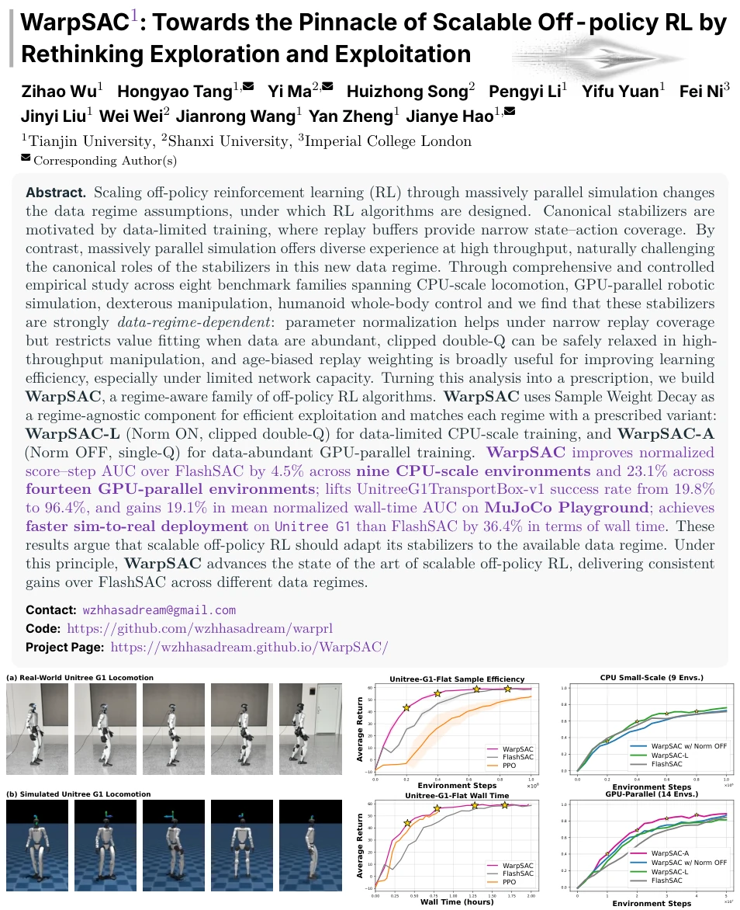
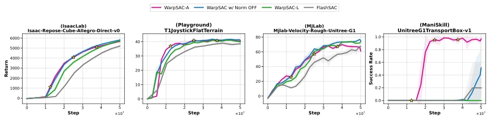
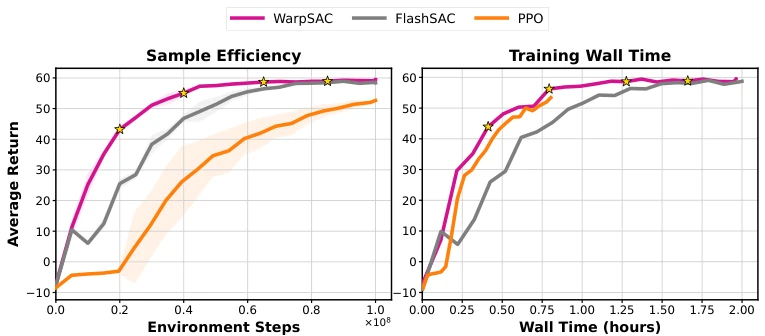
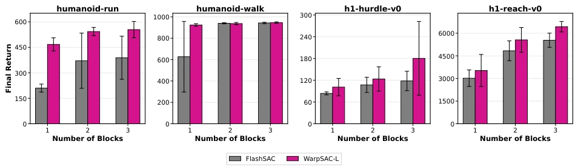
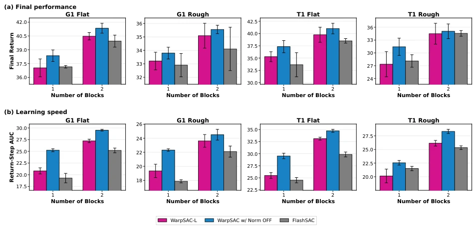
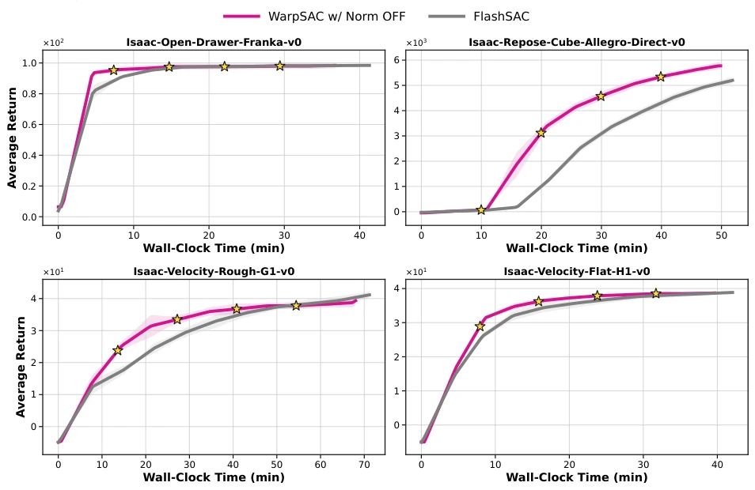
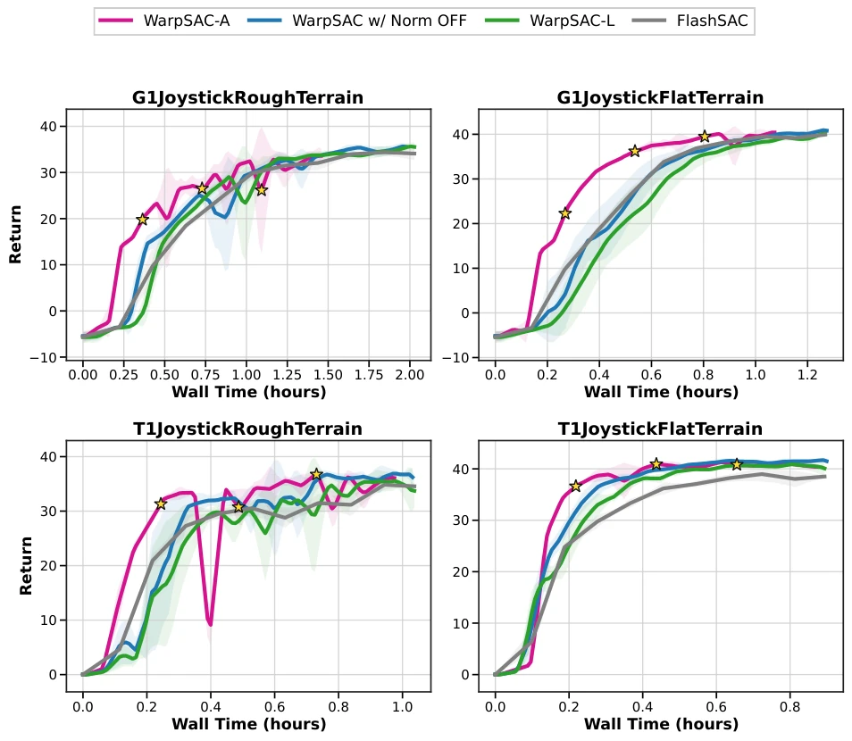
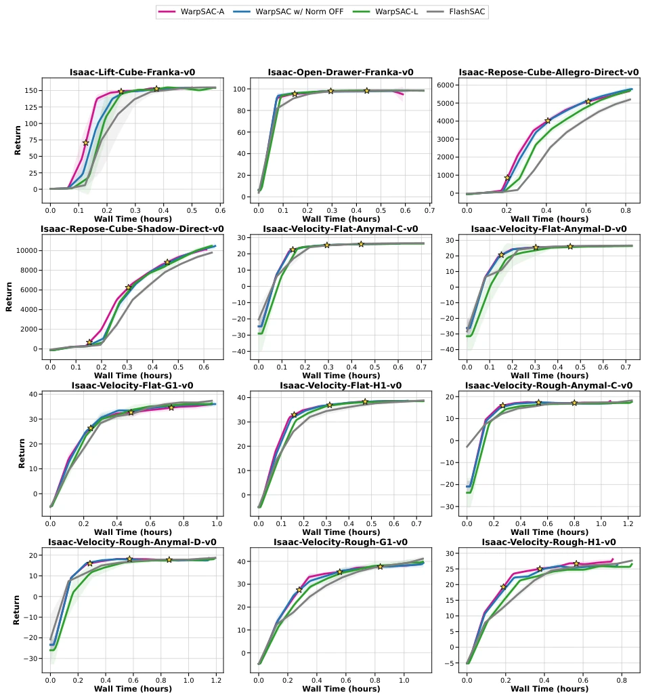
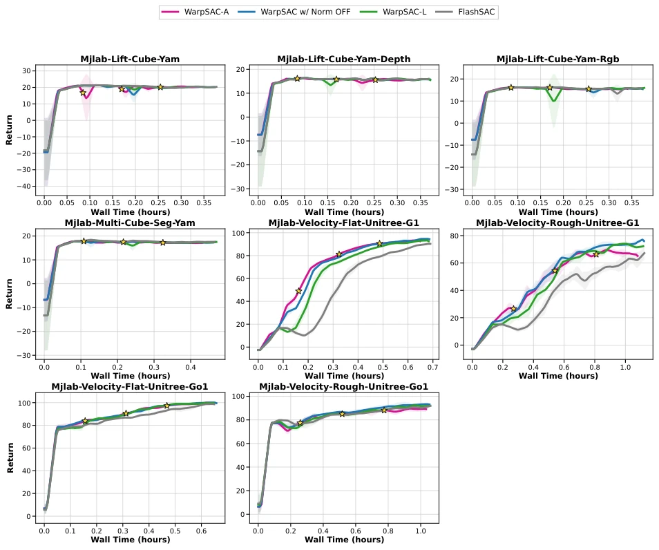

随着GPU加速模拟器的发展，强化学习的数据收集模式已从CPU时代的“数据稀缺”转向GPU时代的“数据泛滥”。现有的可扩展离线RL算法（如FlashSAC）仍沿用传统设计，假设回放缓冲区覆盖狭窄，必须依赖保守策略（如参数归一化、Clipped Double-Q）来防止外推误差（Fujimoto et al., 2018; Haarnoja et al., 2018a）。然而，当大规模并行模拟提供海量且多样的数据时，这些保守机制可能不再必要，反而限制了价值函数的拟合能力和表达自由度。Kim et al. (2026) 提出的FlashSAC虽然提升了效率，但未解决“稳定器”与“数据 regime”不匹配的问题。本文旨在探究：在数据 regime 转变下，哪些经典稳定器真正有效？为何盲目继承旧有组件会导致性能瓶颈？
—

Figure 1 Benchmark-scale and sim-to-real overview. The left strips show real-world and simulated Unitree G1 locomotion, the middle panels report Unitree-G1-Flat sample efficiency and training wall time measured on a single NVIDIA A800 GPU, and the right panels summarize normalized CPU-scale and GPU-parallel learning curves. Across the benchmark curves, WarpSAC improves over FlashSAC, while the preferred stabilizing configuration depends on the data-collection regime.
Figure 2 Learning curves of WarpSAC and FlashSAC in the data-limited regime (CPU-scale). Return (mean ± std over five seeds) versus environment steps for FlashSAC, WarpSAC-L, and WarpSAC w/ Norm OFF on representative tasks from MuJoCo, DMC, HumanoidBench, and MyoSuite. Both WarpSAC variants clearly surpass FlashSAC on all four tasks, and WarpSAC-L attains the strongest final return on humanoid-run, h1-slide-v0, and myo-pen-twirl-hard.

Figure 3 Learning curves of WarpSAC and FlashSAC in the data-abundant regime (GPU-parallel). Return (mean ± std over five seeds) versus environment steps for FlashSAC, WarpSAC-L, WarpSAC w/ Norm OFF, and WarpSAC-A on representative tasks from IsaacLab, MuJoCo Playground, MJLab, and ManiSkill. WarpSAC w/ Norm OFF matches or outperforms WarpSAC-L on IsaacLab, MuJoCo Playground, and MJLab, and WarpSAC-A attains the strongest final return on ManiSkill.

Figure 4 Unitree G1 Sim-to-Real learning curves. The left panel compares sample efficiency with standard-deviation shading. The right panel compares training wall time.

Figure 5 Network-capacity comparison of WarpSAC-L and FlashSAC in CPU-scale training. Final return of WarpSAC-L and FlashSAC as the number of residual blocks is varied on humanoid-run, humanoid-walk, h1-hurdle-v0, and h1-reach-v0. Both methods use Norm ON and clipped double-Q and differ only in replay weighting, isolating how the WarpSAC replay mechanism interacts with network capacity. With a single block, WarpSAC-L improves final return over FlashSAC across all the four tasks; as blocks increase, the gap narrows on saturated tasks but remains visible on harder HumanoidBench tasks.

Figure 6 Network-capacity comparison of WarpSAC variants and FlashSAC in GPU-parallel training. Final return and return–step AUC (normalized by the common training horizon, reflecting average return throughout training) of WarpSAC-L, WarpSAC w/ Norm OFF, and FlashSAC as the number of residual blocks is varied on MuJoCo Playground tasks. At one block, WarpSAC w/ Norm OFF improves both final return and AUC markedly over WarpSAC-L and FlashSAC on G1 Flat and T1 Rough; with two blocks the gap narrows, but WarpSAC w/ Norm OFF remains competitive or better across all four tasks.
其他图片Other Figures

Figure 7 Actual A800 return–wall-time curves on four completed IsaacLab environments. Curves report average return versus elapsed wall-clock time.

Figure 8 MuJoCo Playground learning curves by wall-clock time. Curves report mean return with standard deviation across five seeds. FlashSAC is plotted using the same wall-time axis as the corresponding WarpSAC Norm ON, num-Q = 2 run.

Figure 9 IsaacLab learning curves by wall-clock time. Curves report mean return with standard deviation across five seeds for the evaluated GPU-parallel IsaacLab tasks. FlashSAC is plotted using the same wall-time axis as the corresponding WarpSAC Norm ON, num-Q = 2 run.

Figure 10 MJLab learning curves by wall-clock time. Curves report mean return with standard deviation across five seeds for Unitree locomotion and Yam manipulation tasks. All methods, including FlashSAC, use their own logged wall-clock traces.